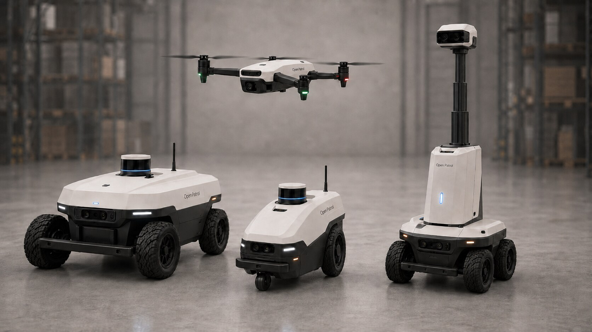
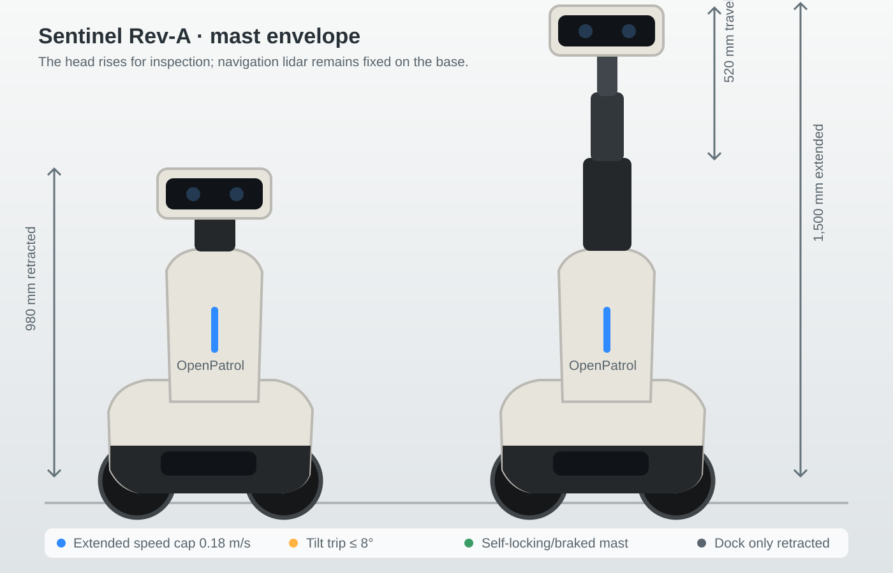
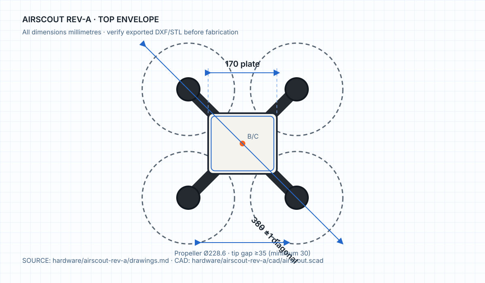
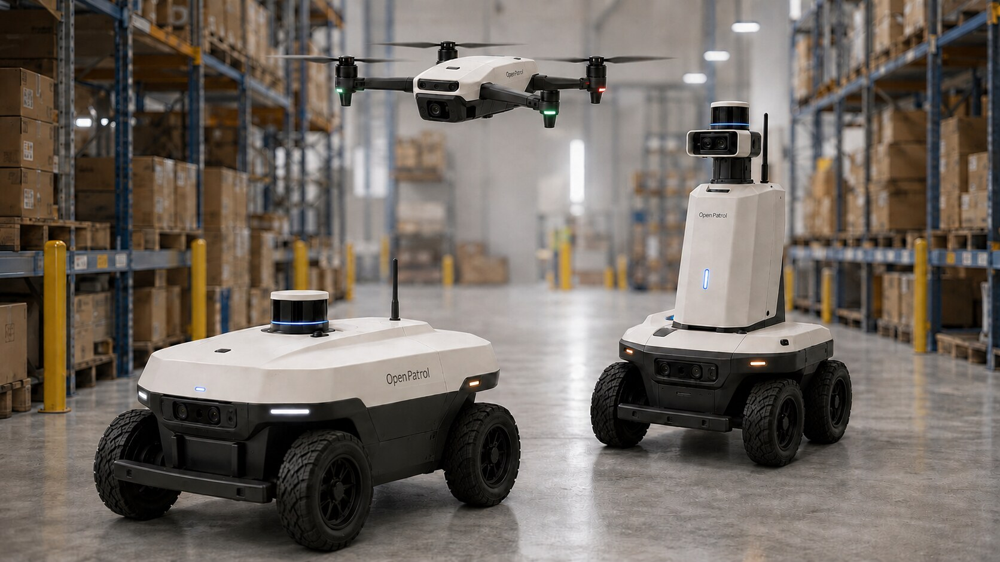

Command centre
Camera wall, device inventory, patrol state, incident review, evidence receipts and an operator audit trail.
One local-first command centre for existing cameras, security systems, patrol robots and drones—with evidence, alerts and consequential decisions kept under operator control.

REV-A VISUALISATIONDIGITAL PROTOTYPECamera wall, device inventory, patrol state, incident review, evidence receipts and an operator audit trail.
RTSP, ONVIF-compatible paths, Frigate, MQTT, NDJSON, alarm/access systems and a generic event API.
Fuse weak observations into incident candidates, then route browser, audio, strobe, siren and talkback actions.
ROS 2 Jazzy, Nav2 and Gazebo workflows with bounded physical adapters for ground platforms and AirScout.
The public visuals use the same geometry and controlled design language as the Rev-A OpenSCAD sources and locked drawing schedules.


Rover One, Sentinel and the four-rotor AirScout share the same operator-controlled incident workflow.

Prototype sourcing estimates exclude labour, tax, validation and third-party equipment.
Python 3.11+. The command-centre demo has no third-party runtime dependency.
Full setup guide →# install
pipx install git+https://github.com/eyeinthesky6/openpatrol.git
# launch
openpatrol
# open http://127.0.0.1:8765Software, simulation, firmware interfaces, parametric CAD, BOMs, wiring guidance and Rev-A engineering specifications are complete enough for a digital prototype release. Fabrication, field calibration, endurance testing and certification remain a future physical-validation phase.
OpenPatrol creates incident candidates; it does not guarantee detection. Certified fire, pool, medical and access systems remain independently operational.